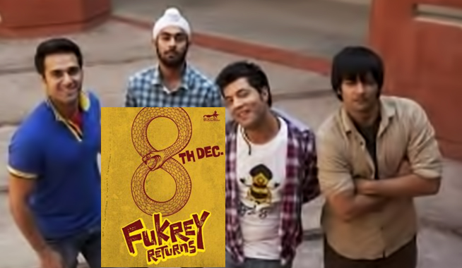
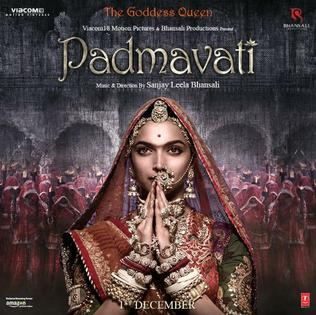

Bollywood formally known as Hindi cinema is the Indian Hindi language film industry,
based in the city of Mumbai, Maharashtra, India.
Bollywood is only a part of the larger cinema of India also known as Indywood, which includes other production centers producing blockbuster films in many other Indian languages
Raja Harishchandra (1913), by Dadasaheb Phalke, is known as the first silent feature film made in India. By the 1930s, the industry was producing over 200 films per annum.
The first Indian sound film, Ardeshir Irani's Alam Ara (1931), was a major commercial success. There was clearly a huge market for talkies and musicals;
Bollywood and all the regional film industries quickly switched to sound filming.
In 1937, Ardeshir Irani, of Alam Ara fame, made the first colour film in Hindi, Kisan Kanya. The next year, he made another colour film, a version of Mother India.
However, colour did not become a popular feature until the late 1950s.
At this time, lavish romantic musicals and melodramas were the staple fare at the cinema.
I have seen many Bollywood and Pollywood movies I used to see movies everyday
 